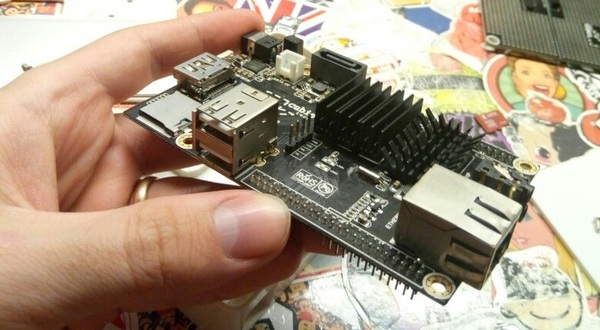
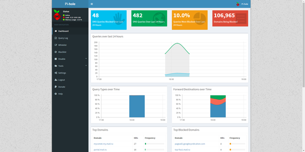
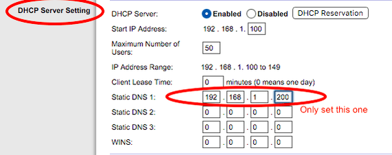

Всем доброго дня, у меня недавно появился самый первый CubieBoard на процессоре A10. И я решил его куда-нибудь пристроить. Наткнулся на проект Pi-Hole и решил, почему бы и нет.

Что же из себя представляет Pi-Hole? "Network-wide ad blocking via your own Linux hardware" - т.е мы блокируем рекламу на ВСЕХ устройствах в локальной сети, используя нашу Linux машинку. Реклама блокируется на вашем компьютере, на компьютере брата, на ноутбуке мамы, на всех сотовых телефонах, и на вашем холодильнике.
Изначально Pi-Hole затачивался под raspberry, но сейчас его можно поставить на любой linux дистрибутив.
На моей CubieBoard стоит Cubian - это переписанный Debian под эту плату.
Для того чтобы поставит PiHole , вам нужно ввести всего одну команду:
curl -sSL https://install.pi-hole.net | bash
Ну или две
wget -O basic-install.sh https://install.pi-hole.net
bash basic-install.sh
p.s На cubian слетел доступ по https, поэтому используйте просто http://
Отлично, после распаковки всех файлов, там откроется простая установка. Вы можете смело отвечать на все пункты - "Next". Интерфейс web-админки можно увидеть в этом коротком видео:
https://www.youtube.com/watch?v=vKWjx1AQYgs
После установки, вам нужно будет перейти в Web-админку, в неё можно попасть по адресу: http://192.168.1.XXX/admin/ - где XXX концовка IP вашего устройства.

На данный момент моя админка выглядит так. На ней вы можете видеть немного графиков и основную статистику. Чуть ниже идёт топ доменов и топ заблокированных доменов. Ещё ниже есть топ устройств с которых было больше всего запросов.
Всё обновляется в режиме реального времени и выглядит довольно круто. Подумываю вывести её на отдельный экран, пускай висит :D
НО Перед админкой, вам нужно будет настроить ваш роутер.
Заходите в настройки вашего роутера, в раздел LAN (не WAN!), и настраиваете DNS адрес, в который пишите адрес вашего устройства. Теперь все устройства в вашей сети будут получать этот DNS адрес. Подробнее - тут.

В админке также можно настроить White-лист и Black-лист доменов. Отключить adblock на время или насовсем. Также там можно обновить "Листы". Листы представляют из себя hosts файлы.
Примеры:
https://raw.githubusercontent.com/StevenBlack/hosts/master/hosts
https://hosts-file.net/ad_servers.txt
Также можно вручную добавлять свои листы.
Проблемы которые возникли при установке:
Проблемы скорей всего из-за специфики Cubian, но всё же.
1. После установки не работает Web админка - пишет 404 Not Found.
Помогло:
sudo lighttpd-enable-mod fastcgi-php
sudo service lighttpd force-reload
2. Не запускался FTL
Помогло:
sudo pihole-FTL start
3. В хроме всё равно показывалась реклама.
Помогло:
Сброс DNS'a - chrome://net-internals/#dns
Ну вроде и все проблемы которые были.
Тесты:
1. Все банеры гугла исчезли в мобильных приложениях.
2. На сайтах, где раньше писало отключить AdBlock, перестало так писать. (не уверен, что на всех, но всё же)
Больше я не смог придумать тестов, если у вас есть вопросы, или вы хотите, чтобы я что-то проверил. Смело пишите в комментариях.
В конце дня постараюсь скинуть скриншот статистики.
Мои прошлые посты похожей тематики:
1. Raspberry Pi 3 Mediacenter + Hyperion Ambilight
2. Arduino: Как я делал "запоминалку" слов